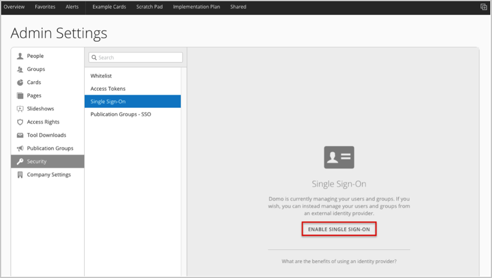
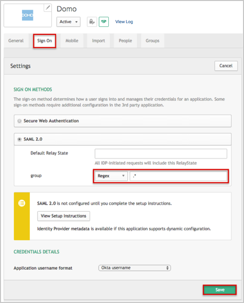
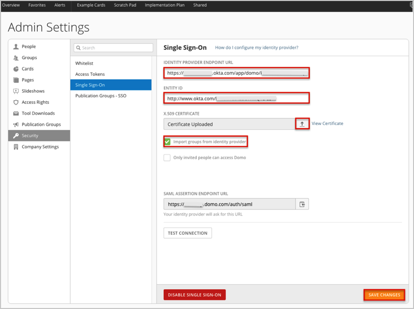
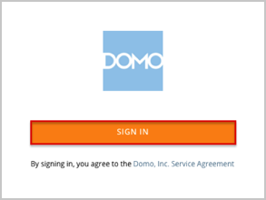

Log in to Domo as an administrator.
Navigate to Settings > Admin > Security > Single Sign-on.
Check the Enable Single Sign-on button.

The Single Sign-On page appears. See screen shot at end of instructions for reference.
Copy and paste the following into the Identity Provider Endpoint URL field.
Sign into the Okta Admin Dashboard to generate this variable.
Copy and paste the following into the Entity ID field.
Sign into the Okta Admin Dashboard to generate this variable.
Download, then upload the following x.509 certificate in .cert format.
Sign into the Okta Admin Dashboard to generate this variable.
If you are using Google Chrome, the certificate needs to be in .pem format. Download, then upload the following x.509 certificate in .pem format.
Sign into the Okta Admin Dashboard to generate this variable.
If you don’t need to import Groups from Okta, uncheck Import groups from identity provider, and proceed to step 9.
If you do need to import Groups from Okta, check Import groups from identity provider .
In Okta, select the Sign On tab for the Domo app, then click Edit.
Select your preferred Group filter from the dropdown list (the Regex rule with the value “.*” in order to send all groups to the Domo instance we used in our example shown here).
Click Save.

Click Save Changes.

Important: Once users are set up for SSO, they are required to use the SSO sign in.
Done!
Notes:
IdP-initiated flows, SP-initiated flows, and Just In Time (JIT) provisioning are all supported.
For an SP-initiated flow:
Go to https://[subdomain].domo.com/auth/index.
Click SIGN IN.
